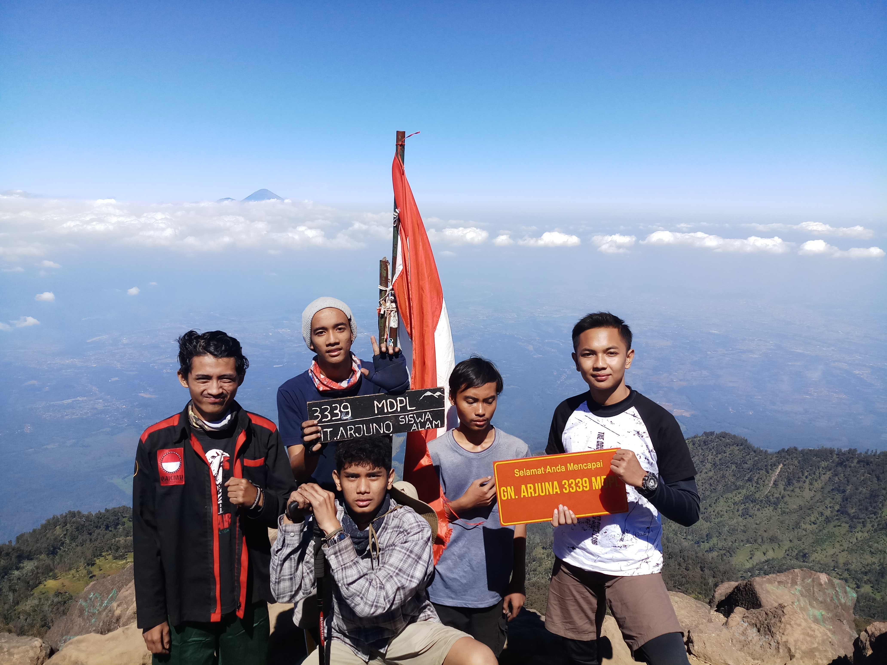

|  |
Mendaki gunung adalah salah satu hobiku yang paling kusukai, Mengapa? karena dengan mendaki gunung kita bisa liburan dan menikmati alam untuk menghilangkan penat kebiasaan sehari - hari, seperti kuliah, nugas, dll.
Dengan mendaki gunung aku juga bisa mendapatkan banyak teman dari berbagai penjuru hehe, (lumayan lah dapet relasi buat ngutang :D), yuk kalau mau mengajak mendaki gunung, langsung saja kontak di bawah ini. |

|